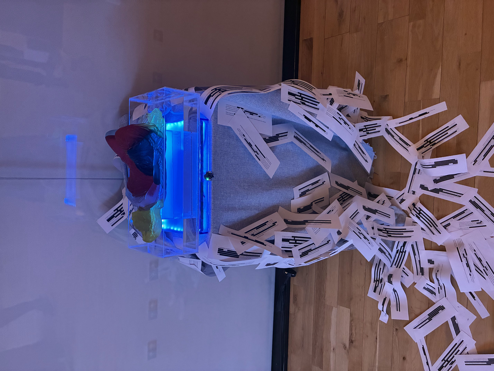

Resin, acrylic, water, LED, time of flight sensor, redacted excerpts from letters I wrote, (metaphorical) blood, (actual) sweat, and so, so many tears.
This piece is a love letter to my dissociative state during trauma.
Pain and suffering can be kept buried even from ourselves. As the viewer approaches this sculpture of me, the entire piece lights up - brightness depending directly on the distance between us. By inviting the viewer into my experience (and in fact depending on physical closeness for the interaction to take place), this work strips me of my natural inclination to retreat, allowing me to bare what’s felt unbearable.
Link to Instagram Post